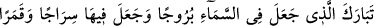
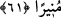
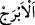
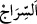

şeklindedir. Nitekim Şerhu’l-Münye’de böyle geçmektedir.
Aşkın sükrü için alnını dâimâ toprağa koy, secdeye kapıl
Çünkü bu nimeti feleklerde sâkin olan melekler tatmamıştır
Allah’ım, bizi karanlıkta ve aydınlıkta senin için mutevazı olan kullarından kıl!
61. Gökte burçları var eden, onların içinde bir çerağ (güneş) ve nurlu bir ay
barındıran Allah, yüceler yücesidir.
Kâmil/eksiksiz kudreti ile “gökte burçları var eden, onların” yâni göklerin değil
burçların “içinde bir çerağ” güneş “ve nurlu” geceleyin ışık saçan “bir ay barındıran
Allah, yüceler yücesidir.” Feyyâz olan Allah’ın hayır ve ihsânı çoktur.
Burhânu’l-Kurân’da der ki: Allah’ın yüceler yücesi olduğu, hayır ve ihsânının çok
olduğu burada özellikle zikredilmiştir. Çünkü peşinden burçlar, gezegenler, güneş, ay,
gece ve gündüz gibi Allah’ın kudretine delâlet eden büyük varlıklardan
bahsedilmektedir. Çünkü bunlar olmasaydı yeryüzünde canlı, bitki ve sâire mevcut
olmazdı.
Bu burçlar on ikidir. Her burcun aya âid iki tam, üçte bir menzili vardır. Bunlar yedi
gezegenin menzilleridir. Onlar güneşe göre otuz derecedir. Burçların isimleri şöyledir:
Koç, boğa, ikizler, yengeç, aslan, başak, terazi, akrep, yay, oğlak, kova ve balık. Koç ve
akreb, Merih’in iki menzildir. Boğa ve terazi, Zühre’nin iki menzildir. İkizler ve başak,
Utarid’in iki menzildir. Yengeç, Ay’ın menzildir. Aslan, Güneş’in menzildir. Yay ve
balık, Müşteri’nin iki menzildir. Oğlak ve kova, Zühal’in iki menzildir. Bu burçlar, dört
tabîata göre taksim edilmiştir. Her tabîat için üç burç vardır: Koç, aslan ve yayın üçü
ateş tabîatlıdır. Boğa, başak ve oğlağın üçü toprak tabîatlıdır. İkizler, terazi ve kovanın
üçü hava tabîatlıdır. Yengeç, akrep ve balığın üçü ise su tabîatlıdır.
Bu menzillere “burç” diye isim verilmesi, yüksek kaleler ve köşkler şeklinde
oluşlarından dolayıdır. Çünkü bunlar gezegenlere âid, sâkinleri için yüksek konaklardır.
Burç kelimesi, açık olmak ve görünmek mânâsına gelen “
”den türemiştir.
Hasan, Mücâhid ve Katâde der ki: “Burçlar; Zühre, Süheyl, Müşteri, Simâk, Ayyûk
gibi büyük yıldızlardır. Parlak ve güzel oldukları, etrafa ışık saçtıkları için onlara bu
isim verilmiştir.”
İki kaşı arası geniş/açık olan kimseye “
” denir.
Ayın menzilleri, isimleriyle beraber Yûnus sûresinin baş tarafında geçmişti.
Râğıb der ki: “
” bir fitil ile parlayan ve ışık saçan lamba ve kandile denir. Etrafı